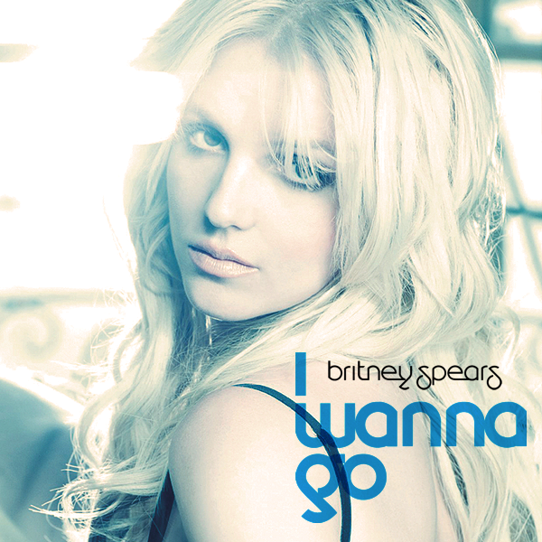

|  |
|
(Lyrics) Lately I’ve been stuck imagining What I wanna do and what I really think Time to blow out Be a little inappropriate Cause I know that everybody’s thinking it When the light’s out Shame on me To need release Un-un-uncontrollably I-I-I wanna go-o-o all the way-ay-ay taking out my freak tonight I-I-I wanna show-ow-ow all the dir-ir-irt I got running through my mind I-I-I wanna go-o-o all the way-ay-ay taking out my freak tonight I-I-I wanna show-ow-ow all the dir-ir-irt I got running through my mind Lately people got me all tied up There's a countdown waiting for me to erupt Time to blow out I’ve been told who I should do it with To keep both my hands above the blanket When the light’s out Shame on me To need release Un-un-uncontrollably I-I-I wanna go-o-o all the way-ay-ay taking out my freak tonight I-I-I wanna show-ow-ow all the dir-ir-irt I got running through my mind I-I-I wanna go-o-o all the way-ay-ay taking out my freak tonight I-I-I wanna show-ow-ow all the dir-ir-irt I got running through my mind Shame on me (shame on me) To need release (to need release) Un-un-uncontrollably (un-control-lably-lably-lably-lably) I-I-I wanna go-o-o all the way-ay-ay taking out my freak tonight I-I-I wanna show-ow-ow all the dir-ir-irt I got running through my mind I-I-I wanna go-o-o all the way-ay-ay taking out my freak tonight I-I-I wanna show-ow-ow all the dir-ir-irt I got running through my mind |
(Letra en Español) Últimamente he estado imaginando Lo que quiero hacer y lo que realmente pienso Es hora de reventar Ser un poco inapropiada Porque sé que todo el mundo está pensando en eso Cuando las luces se apagan Cúlpame a mí El necesitar liberarme Des-des-descontroladamente Yo-yo-yo quiero ir-ir-ir hasta el final-al-al sacando lo más raro de mi esta noche Yo-yo-yo quiero mostrar-ar toda la suci-ci-ciedad que se me pase por la cabeza Yo-yo-yo quiero ir-ir-ir hasta el final-a l-al sacando lo más raro de mi esta noche Yo-yo-yo quiero mostrar-ar toda la suci-ci-ciedad que se me pase por la cabeza Últimamente la gente me retiene Hay una cuenta atrás esperando que explote Es hora de reventar Me han dicho que debo hacerlo Para mantener las dos manos por encima de la gente Cuando las luces se apagan Cúlpame a mí El necesitar liberarme Des-des-descontroladamente Yo-yo-yo quiero ir-ir-ir hasta el final-al-al sacando lo más raro de mi esta noche Yo-yo-yo quiero mostrar-ar toda la suci-ci-ciedad que se me pase por la cabeza Yo-yo-yo quiero ir-ir-ir hasta el final-al-al sacando lo más raro de mi esta noche Yo-yo-yo quiero mostrar-ar toda la suci-ci-ciedad que se me pase por la cabeza Cúlpame a mí (cúlpame a mí) El necesitar liberarme (el necesitar liberarme) Des-des-descontroladamente (des-descon-trol-trol-trol-troladamente) Yo-yo-yo quiero ir-ir-ir hasta el final-al-al sacando lo más raro de mi esta noche Yo-yo-yo quiero mostrar-ar toda la suci-ci-ciedad que se me pase por la cabeza Yo-yo-yo quiero ir-ir-ir hasta el final-al-al sacando lo más raro de mi esta noche Yo-yo-yo quiero mostrar-ar toda la suci-ci-ciedad que se me pase por la cabeza |